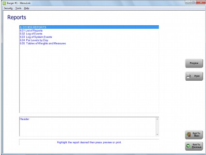
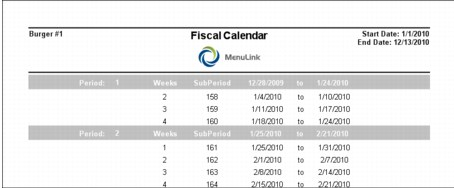
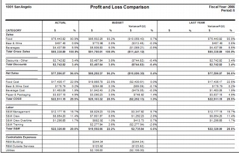
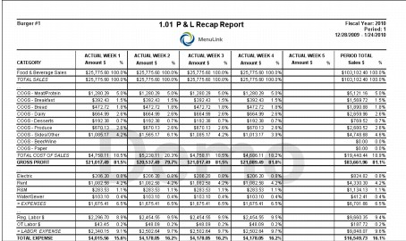
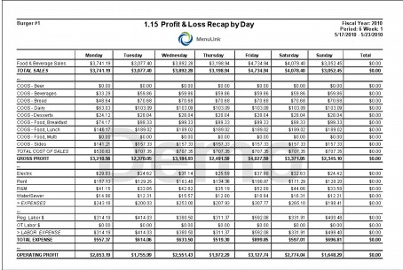

Period End Reports This section includes samples and descriptions of Period End-related reports available in MenuLink Client. Depending on your system set-up, you may not have access to all reports and selection options described. Contact your system administrator for more information. For general information on how to view and print reports, as well as selecting report options, see Viewing and Printing Reports. You can access Period End reports from the Reports button on the Period End Switchboard (Period End reports only, as shown in the screen example below) or from the Reports button on the Main Switchboard (all Inventory reports). Note that the Period End reports screen generally contains other ‘miscellaneous’ reports.  Fiscal Calendar Report The Fiscal Calendar report displays how your fiscal calendar is configured.  Profit and Loss Comparison Report The Profit and Loss Comparison report compares this year’s profit and loss figures with last year’s for a selected time frame. The report also includes this year’s budgeted amounts and variance, if this information is set up in your system. The information in the report is similar to the Sales Journal report. Report continues for all defined expense categories.  Profit and Loss Recap Report The Profit and Loss Recap report shows summary P&L information for each week in a selected period as well as totals for the period.  Profit and Loss Recap by Day Report The Profit and Loss Recap report shows summary P&L information for day in a selected time period as well as totals for the period. 